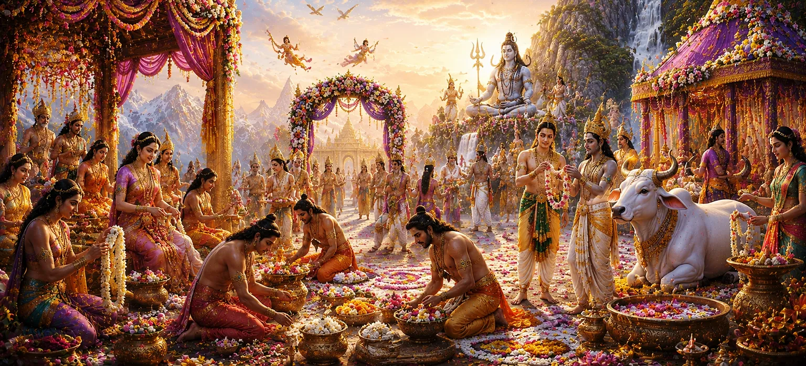

With Lord Shiva having accepted Sati’s devotion and the divine union now assured, joy spread throughout the heavens. The gods, sages, and celestial beings understood that they were about to witness one of the most sacred and significant events in creation. The marriage of Shiva and Sati was not merely the union of two divine beings; it was the coming together of Shiva and Shakti, the eternal principles that sustain the universe.
News of the forthcoming marriage spread rapidly through the three worlds. The devas rejoiced, the sages offered blessings, and celestial beings prepared to participate in the grand celebration. Every realm was filled with anticipation, for the wedding of Shiva and Sati was destined to become a divine event remembered throughout the ages.
King Dakṣa was delighted to learn that Lord Shiva had accepted Sati. Determined to conduct the wedding with the greatest honor and magnificence, he began making elaborate arrangements. Messengers were dispatched, sacred materials were gathered, and preparations commenced for a celebration worthy of the divine bride and groom.
The gods eagerly prepared to attend the sacred wedding. Indra, the guardians of the directions, celestial sages, and countless divine beings looked forward to witnessing the union. The heavens buzzed with excitement as arrangements were made for their journey to the auspicious ceremony.
Learned sages and priests were invited to oversee the sacred rites. Auspicious dates were chosen, Vedic hymns were prepared, and every ritual detail was carefully planned. Since this wedding carried cosmic significance, every aspect of the ceremony was conducted according to the highest spiritual standards.
As the preparations advanced, Sati’s heart overflowed with gratitude and happiness. Her long penance and unwavering devotion had borne fruit. Yet her joy was marked by humility, for she viewed the coming marriage not as a personal achievement but as the blessing of Lord Shiva and the fulfillment of divine will.
The wedding symbolized the eternal union of consciousness and divine energy.
Their union would strengthen balance and order throughout creation.
The marriage fulfilled a sacred plan established by the Supreme.
As the wedding day approached, auspicious signs appeared throughout the worlds. Gentle breezes carried the fragrance of flowers, celestial music echoed in the heavens, and hearts were filled with joy. These omens signified that nature itself rejoiced in anticipation of the sacred union.
The celestial realms became vibrant with celebration. Divine beings adorned themselves with splendid ornaments, heavenly musicians prepared their instruments, and the gods eagerly anticipated the moment when Shiva and Sati would be joined in marriage according to sacred rites.
All preparations were gradually nearing completion. The gods, sages, and devotees awaited the glorious ceremony with reverence and joy. The stage was now set for one of the most celebrated divine weddings in Hindu tradition, a union destined to influence the course of cosmic history.
The great sages who understood the spiritual significance of the coming union offered their blessings to both Shiva and Sati. They praised Sati’s devotion, admired Shiva’s divine wisdom, and prayed that their sacred marriage would bring peace, prosperity, and spiritual upliftment to all beings throughout the universe.
Every heart was filled with anticipation as the moment of the divine wedding drew closer. The heavens, the earth, and the celestial realms seemed united in expectation. What was about to take place was not merely a wedding ceremony but the manifestation of a cosmic truth that would inspire generations of devotees.
"When devotion is pure and destiny is divine, the blessings of the Supreme arrive at the appointed time. Sati’s faith and Shiva’s grace united to fulfill a sacred purpose that would illuminate all the worlds."
The gods rejoiced as Lord Shiva accepted Sati and preparations for the divine wedding began across the three worlds. With destiny now unfolding before gods, sages, and celestial beings, the long-awaited sacred union was finally at hand. The next chapter narrates the glorious marriage of Shiva and Sati, one of the most celebrated and spiritually significant events in the Shiva Purana.